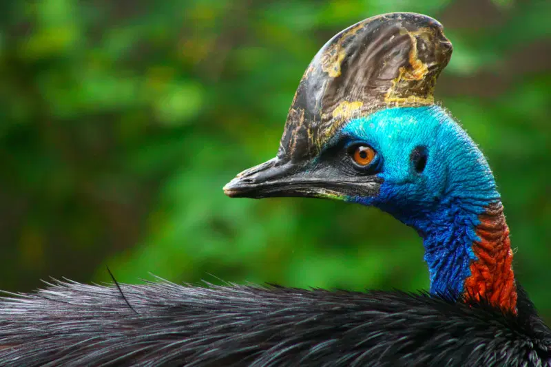

Toucan: The toucan is a remarkable bird known for its vibrant appearance and distinctive large beak.
Native to the tropical rainforests of Central and South America, toucans are agile creatures
that hop and leap through the trees. Their lightweight beaks serve multiple purposes, helping them
reach and consume fruits while regulating their body temperature. Toucans are social birds often found
in small flocks, and their unique vocalizations add to the lively atmosphere of the rainforest. With their
captivating appearance and charismatic behavior, toucans embody the splendor of the tropical wilderness.

Cassowary: The cassowary is a fascinating and formidable flightless bird native to the rainforests of Australia,
New Guinea, and nearby islands. Renowned for its impressive size, unique appearance, and striking features
such as a distinctive helmet-like casque and sharp claws, the cassowary commands attention. With powerful legs,
it is an adept runner capable of reaching impressive speeds. As important seed dispersers, cassowaries contribute
significantly to their ecosystem's health, while also displaying territorial behavior as a means of protection.
The cassowary's captivating characteristics and ecological significance make it an extraordinary and iconic avian
species. <
.webp)